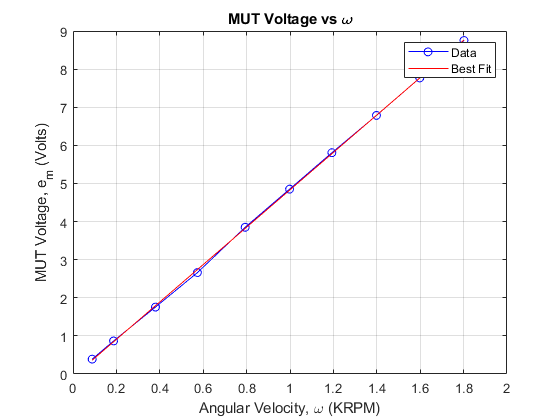
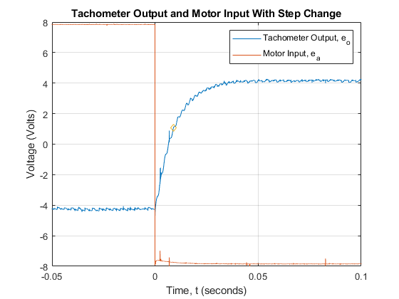
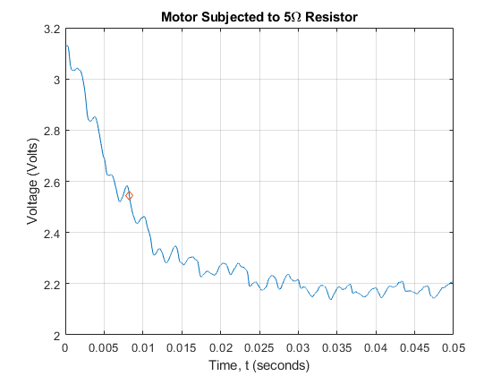

Contents
Part 2
clear all
close all
Input_ei=[1.5 2 3 4 5 6 7 8 9 10];
Tach_eo=[.265 .561 1.14 1.72 2.38 2.994 3.579 4.195 4.794 5.405];
MUT_em=[.390 .867 1.756 2.661 3.85 4.85 5.806 6.784 7.768 8.751];
Ktach=3;
for i=1:length(Tach_eo)
Omega(i)=Tach_eo(i)/Ktach;
end
MUTfit=polyfit(Omega,MUT_em,1);
Ke=MUTfit(1);
Keactual=(4.39+5.37)/2;
figure(1)
bestfit=(MUTfit(1)*Omega)+MUTfit(2);
plot(Omega,MUT_em,'bo-',Omega,bestfit,'r-')
ylabel('MUT Voltage, e_m (Volts)')
xlabel('Angular Velocity, \omega (KRPM)')
title('MUT Voltage vs \omega')
grid on
legend('Data','Best Fit')
Kt=((Ke/1000)/(pi/30))*141.6;
ktactual=6.6;

Part 3
File37 = '3.7.xlsx';
data37 = xlsread(File37);
CH037 = data37(5:100004,1);
CH137 = data37(5:100004,2);
t37 = data37(5:100004,3)-.2935;
File39 = '3.9.xlsx';
data39 = xlsread(File39);
CH039 = data39(5:100004,1);
CH139 = data39(5:100004,2);
t39 = data39(5:100004,3);
ei=6;
R=3.6;
TStall=(Kt*ei)/R;
Ksys=abs(mean(CH037(end-100:end))/mean(CH137(end-100:end)));
Kmot=Ksys/Ktach;
tau_Voltage=(.632*(8))-4;
for i=1:length(t37)
if CH037(i) >= tau_Voltage
tau632_motor = t37(i);
break
else
end
end
figure(2)
plot(t37,CH037,t37,CH137,tau632_motor,tau_Voltage,'d')
axis([-.05 .1 -8 8])
grid on
xlabel('Time, t (seconds)')
ylabel('Voltage (Volts)')
legend('Tachometer Output, e_o','Motor Input, e_a')
title('Tachometer Output and Motor Input With Step Change')
R42=4.2;
B=.5*(Kt-(Kmot*Ke*Kt))/(Kmot*R42);
J=.5*((tau632_motor*((Ke*Kt)+(R42*B)))/R42)*(.001/(pi/30));
t39new=t39(79200:end)-.19;
CH039new=CH039(79200:end);
CH139new=CH139(79200:end);
figure(3)
CH039S=wsmooth(CH039new,t39new,6);
CH139S=wsmooth(CH139new,t39new,6);
meanCH039=mean(CH039S(end-100:end));
AMP=(CH039S(1)-CH039S(end));
plot(t39,CH039,t39,CH139)
grid on
xlabel('Time, t (seconds)')
ylabel('Voltage (Volts)')
title('Motor Subjected to 5\Omega Resistor')
tau39=find((abs((.368*AMP)+meanCH039)-CH039S) <= .001);
plot(t39new,CH039S,t39new(tau39(end)),CH039S(tau39(end)),'d')
grid on
xlabel('Time, t (seconds)')
ylabel('Voltage (Volts)')
title('Motor Subjected to 5\Omega Resistor')
tau39=t39new(tau39(end));
Settling_Time=4*tau39;
sserror=(CH039new(1)-meanCH039)/CH039new(1);
 